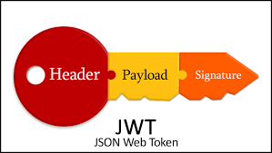
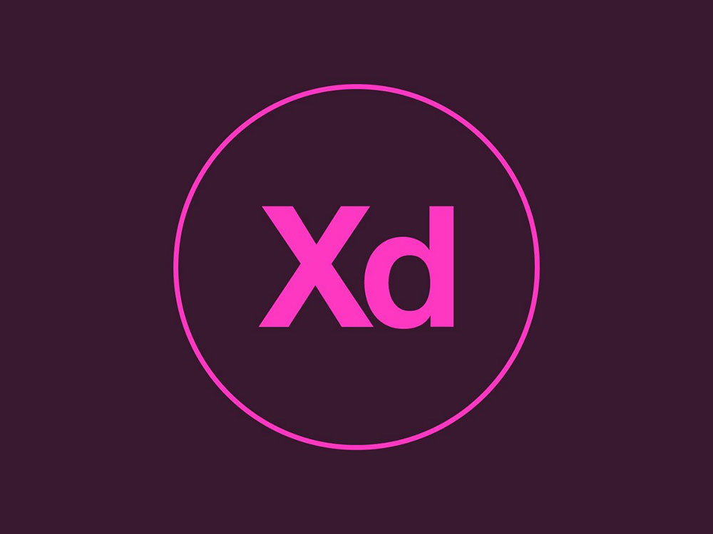

test
1.¿Que es json web token ?
Es un algoritmo que nos permite almacenar datos priveligiados y unicos y poder verificar que el remitente es quien dice ser
Es un algoritmo para almacenar datos y esta cifrado en numeros binarios
Este nos premite poder ver la informacion de cualquier progama instalado en nuestros equipos

2.¿Que es adobe ilustrador?
Es aplicacion para poder acceder correctamente aprogramas profecionales
Es una plataforma web que nos permite acceder a meterial grafico altamente calificado
Es un programa que nos permite crear material gráfico-ilustrativo altamente profesional
3.¿Que es adobe XD?
Es una plataforma de diseño de experiencias para poder comunicar con los demas programas y muy utilizada en la programacion
Es una herramienta de diseño que ayuda acrear prototipos identicos casi reales a los de la vida real
Es una herramienta muy comun entre los desarrolladores para poder hacer sus diseños y sacarlos al mercado

Enviar